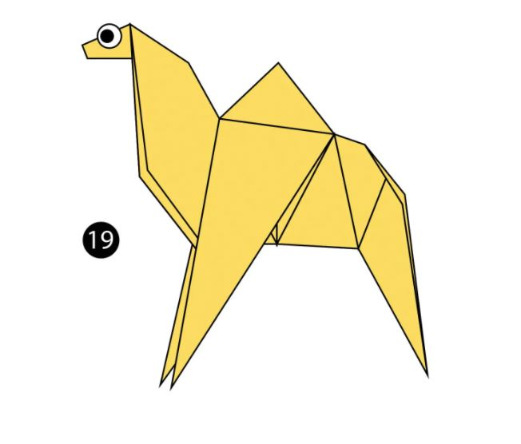
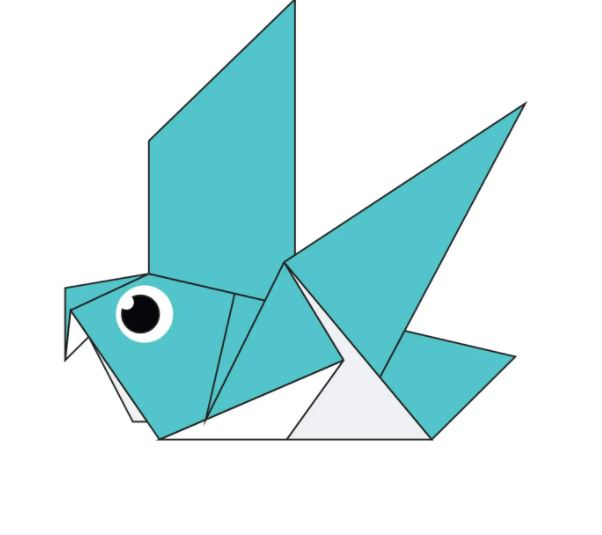
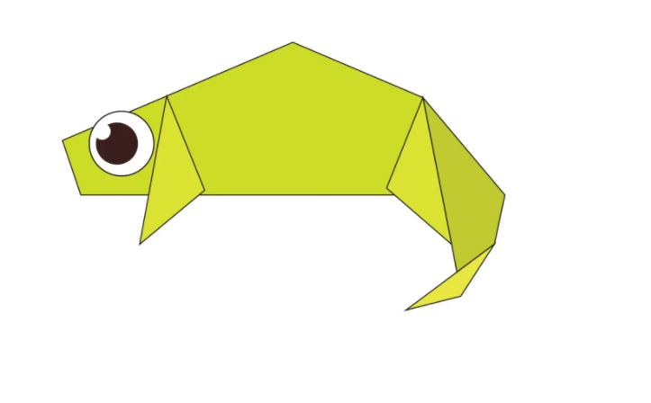

Click here and let's make a Origami Camel
Interesting Facts about CAMELS
- Camels have three sets of eyelids and two rows
of eyelashes to keep sand out of their eyes.
- Camels have thick lips which let them forage for thorny plants other animals can’t eat.
- Camels can completely shut their nostrils during sandstorms.
- Don’t make a camel angry – they can spit as a way to distract whatever they think is a threat
- Camels can travel at up to 40 miles per hour – the same as a racehorse!

Interesting Facts about PIGEON
- Pigeons are incredibly complex and intelligent animals. They are one of only a small number of species to pass the ‘mirror test’ – a test of self recognition. They can also recognise each letter of the human alphabet, differentiate between photographs, and even distinguish different humans within a photograph.
- Pigeons are highly sociable animals. They will often be seen in flocks of 20-30 birds.

Interesting Facts about Chameloen
- THEIR FEET WORK LIKE SALAD TONGS.
- ALMOST HALF OF ALL KNOWN SPECIES LIVE IN MADAGASCAR.
- CHAMELEONS VARY WILDLY IN TERMS OF SIZE.
- THEY MAINLY CHANGE COLOR IN ORDER TO COMMUNICATE OR REGULATE BODY TEMPERATURE.
- THEIR EYES CAN SWIVEL AROUND IN TWO DIFFERENT DIRECTIONS SIMULTANEOUSLY.